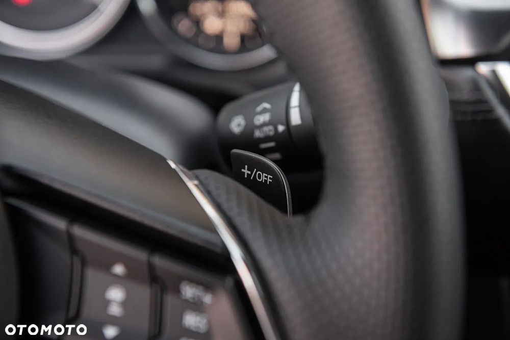
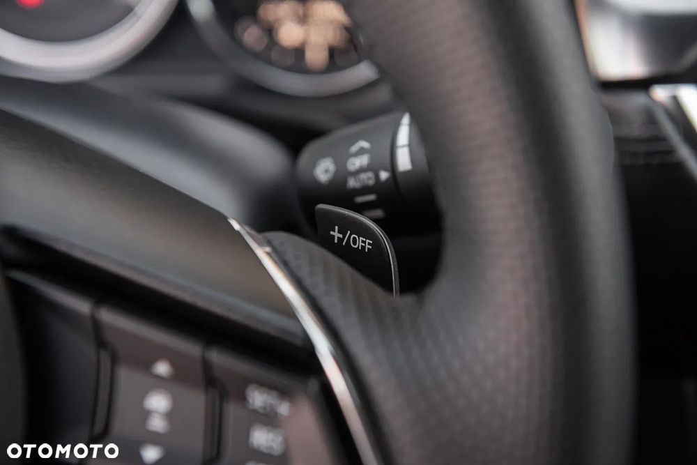

Mazda 6 2.5 SkyPassion
Na sprzedaż wyjątkowa Mazda 6 w wersji SkyPassion z dynamicznym i niezawodnym silnikiem benzynowym 2.5 o mocy 192 KM. Rok produkcji: 2017, przebieg: 164 000 km. Samochód w kolorze czarnym, który idealnie podkreśla elegancki i nowoczesny design Mazdy 6.
Technologia i bezpieczeństwo:
• adaptacyjny tempomat, system monitorowania martwego pola, asystent pasa ruchu, rozpoznawanie znaków drogowych).
• LED-owe reflektory
• kamera cofania i czujniki parkowania przód/tył.
Komfort i wnętrze:
• skórzana tapicerka w idealnym stanie.
• podgrzewane fotele przednie i tylne
• podgrzewana kierownica.
• elektrycznie regulowane fotele z pamięcią ustawień.
• system multimedialny z nawigacją.
• system nagłośnienia BOSE.
• manetki zmiany biegów przy kierownicy
Wygląd i detale:
• oryginalne 19-calowe alufelgi
• przyciemniane szyby
Stan techniczny i serwisowy:
Olej wymieniony przy przebiegu 163 000 km.
Samochód po wymianie tarcz i klocków hamulcowych z przodu przy przebiegu 157 000 km.
Przy przebiegu 144 000 km w ASO Mazdy został wymieniony olej w skrzyni biegów.
Dodatkowe informacje:
• Idealny samochód zarówno na dłuższe trasy, jak i codzienne użytkowanie
• Możliwość sprawdzenia w wybranej stacji diagnostycznej
Cena: 74 900 PLN, wystawiam fakturę VAT marża
Zapraszam do obejrzenia i jazdy próbnej!
Samochód w ciągłej eksploatacji, przebieg może ulec zmianie
 
